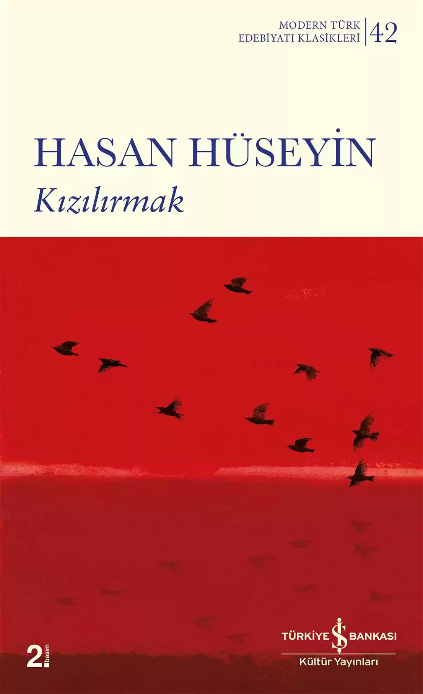

ESERLERİMİZ
Üç Başlı Ejderha
“Leylâ Erbil acıyı, sevgiyi, inancı, ölümü ‘estetize’ etmekten kaçınır. Kişilerini trajik kahramanlara dönüştürmemeye özen gösterir. Onlar ‘Bizhalk’ın üyesidirler: Hatalı, yalancı, duyarsız, çıkarcı, zayıftırlar. Zaaflarını hoş görmez kişilerinin. Tam tersine onlara vurgu yapar. Erbil’de düzenin yandaşları gibi düzenin karşıtları da aynı acımasız ‘eleştirel bilinç’ önündedirler. Olumlu kişileri bile kurtulamaz eleştirilmekten.."
Bütün Şiirleri
“Bir delikanlı Orhan’ın şiirlerini okumuşsa içi titremeden, gözü yaşarmadan insana, ağaca, kuşa, taşa, toprağa, Ankara’ya, İstanbul’a bakamaz, kaldırımına tüküremez, ağacını kesemez; sokakta kendi halinde, sakalı ağarmış, paltosu yırtık, üfürsen uçacak bir adamın –Süleyman Efendi budur diye– eline sarılmadan edemez olur. Orhan’ın şiirlerini okuyan kız, erkek kimseyi öldüremez, kimseyi dövemez, kimseye sövemez. Türkçe Orhan’ın elinde bugüne kadar bilmediğimiz hale gelmişti. Biz Türkçemize neler, ne ukalâlıklar, ne yabancılıklar, ne paçavralar giydirmiştik. O Türkçeyi soyuvermiş, yakışır urbalar giydirmişti. Aman şu Türkçe ne güzel şeymiş, dedik.” Sait Faik Abasıyanık

Kızılırmak
şakıdı kuş yarıldı nar delirdi ateş ve başladı uğul uğul uğuldamaya bütün ırmakları dünyanın kızılırmak kızılırmak *Silah ve şarkı *Sen ne cömert topraklarsın ey Ortadoğu *Ne bulmak içkilerde intiharlarda *Kırmızböceğini tanır mısınız? *Anasının karnını tekmelediğinde Temmuz *Benim karamsarlığım belki de bir demet gül-sevdiğim *Elbet bir bildiği var bu Haçaturyan’ın *Of ooofff, koca gürültülü devrimsiler yutturmacalar *Yorul ey gayrı *Benim karamsarlığım belki de bir demet gül-sevdiğim *Bir gün çıkıp geldiler *İncecik boyunlu kıraç karpuzu *Ay doğar bedir bedir *Silah ve şarkı *Bir oğlum olacak adı Temmuz *Köprüye varınca köprü yıkıldı

Otlakçı
Çoğunlukla Meslek dergisinde yayımlanan ilk hikâyelerinden örneklerin toplandığı bu kitapta yazarın gerçekçi yönünü tüm etkisiyle görüyoruz. Memduh Şevket olup biteni alaycı tavrıyla kısa ve bol diyaloglu bir biçimde hikâyeleştirir. Ona yakıştırılan “gözlemci gerçekçi”lik, okuyanda “yazma sanatı”na karşı bir ilgi, istek uyandırır niteliktedir. En kaba, uslanmaz karakterlerine dahi olgun ve duyarlı yaklaşarak okurun sempati duymasını sağlamayı başarmıştır.
Canfeda
Hayal oyunu /Ellerindi ellerimden tutan /Ellerimdi ellerinden tutan… /Bıraktığı anda ellerimiz ellerimizi /Gökyüzüne vuracaktı gölgeleri ellerimizin /Kimbilir kaç martılar halinde… /Bir masada karşı karşıya /Seyrederken dudaklarını senin, /Dile gelmiş ilk Türkçeydik… /Henüz başlamış külrengi bahar, /Ne savaş, ne barıştık biz… /Bu dünyaya yeni gelmiş bir diyar /Manolyaya gece konmuş kumrular…
Duvar
Duvar Attilâ İlhan’ın ilk şiir kitabı. Daha çok özgürlük, eşitlik ve mutluluk ideali üzerine yazılmış, toplumsal gerçekçi ilk şiirler… İlhan, “Duvar’daki şiirler, belki harbi etiyle kemiğiyle yaşamamış; ama gazete, radyo ve sinema yoluyla bir yandan; fırında kaybolan ekmek, seferber edilmiş ordu, pasif korunma ve karartmalar yoluyla öbür yandan; onun sertliğini ve hainliğini ‘etinde duymuş’ bir harp delikanlısının şiirleri” diyor, “sahillerimize asker cesetleri vuruyordu, barut ve yangın kokusunu alıyorduk…”